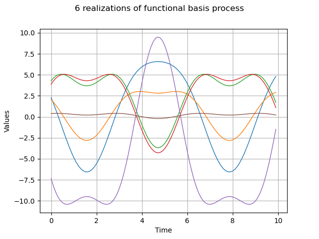

Note
Go to the end to download the full example code
Create a functional basis process¶
The objective of this example is to define
 a multivariate stochastic
process of dimension
a multivariate stochastic
process of dimension  where
where  , as a linear
combination of
, as a linear
combination of  deterministic functions
deterministic functions
 :
:
![\begin{aligned}
X(\omega,\underline{t})=\sum_{i=1}^KA_i(\omega)\phi_i(\underline{t})
\end{aligned}]()
where  is a random vector of dimension .
is a random vector of dimension .
We suppose that  is discretized on the mesh which has
is discretized on the mesh which has  vertices.
vertices.
A realization of  on consists in generating a realization
on consists in generating a realization
 of the random vector
of the random vector  and in evaluating the
functions
and in evaluating the
functions  on the mesh .
on the mesh .
If we note
 the realization of , where
the realization of , where
 , we have:
, we have:
![\begin{aligned}
\forall k \in [0, N-1], \quad \underline{x}_k = \sum_{i=1}^K\alpha_i\phi_i(\underline{t}_k)
\end{aligned}]()
import openturns as ot
import openturns.viewer as viewer
ot.Log.Show(ot.Log.NONE)
Define the coefficients distribution
mu = [2.0] * 2
sigma = [5.0] * 2
R = ot.CorrelationMatrix(2)
coefDist = ot.Normal(mu, sigma, R)
Create a basis of functions
phi_1 = ot.SymbolicFunction(["t"], ["sin(t)"])
phi_2 = ot.SymbolicFunction(["t"], ["cos(t)^2"])
myBasis = ot.Basis([phi_1, phi_2])
Create the mesh
myMesh = ot.RegularGrid(0.0, 0.1, 100)
Create the process
process = ot.FunctionalBasisProcess(coefDist, myBasis, myMesh)
Draw a sample
N = 6
sample = process.getSample(N)
graph = sample.drawMarginal(0)
graph.setTitle(str(N) + " realizations of functional basis process")
view = viewer.View(graph)
